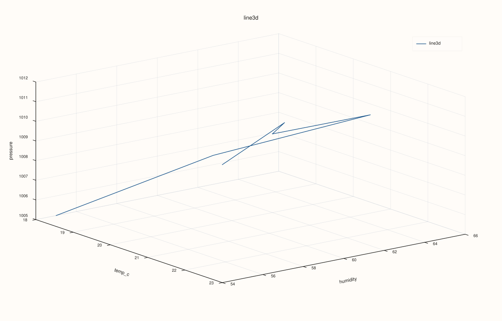
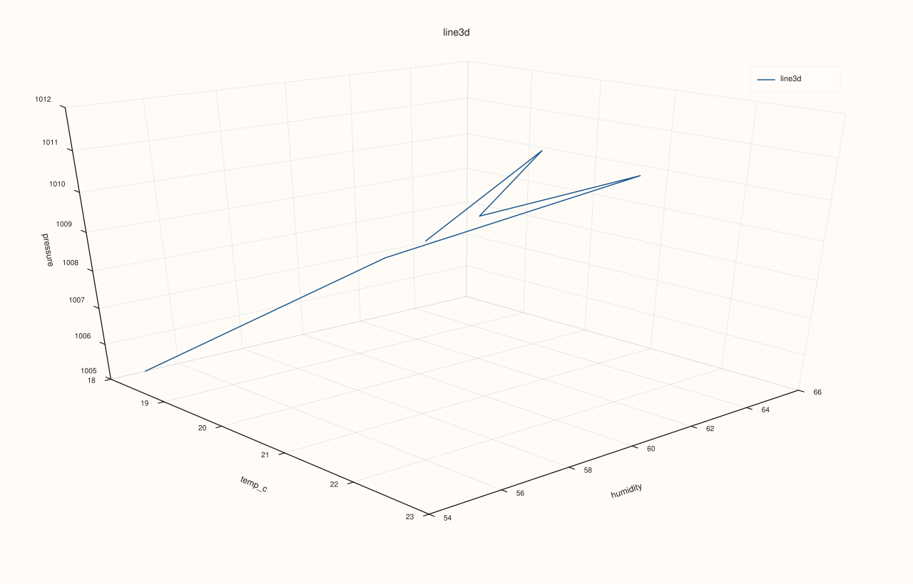

CatalogPlot3DAccessor::line¶
Back to CatalogPlot3DAccessor API Reference
Signatures¶
CatalogPlot3DAccessor::line(std::string_view x_key,
std::string_view y_key,
std::string_view z_key,
const pluss::table::Line3DPlotOptions& options = {}) const -> pluss::pl::Studio
CatalogPlot3DAccessor::line(std::string_view x_key,
std::string_view y_key,
std::string_view z_key,
const CatalogLine3DPlotOptions& options) const -> pluss::pl::Studio
What It Does¶
Draws one continuous 3D path (flash::path3) through the aligned (x_key, y_key, z_key)
rows, in row order — the 3D counterpart of CatalogPlotAccessor::line,
except all three axes come from explicit keys rather than one key plus a resolved x-axis.
Reuses the same all-keys-reconciled-together alignment
CatalogPlot3DAccessor::scatter uses.
Parameters¶
x_key, y_key, z_key (std::string_view, required)
The three keys forming the path’s 3D coordinates, connected in row order after
alignment.
options (pluss::table::Line3DPlotOptions or CatalogLine3DPlotOptions)
```cpp
struct Line3DPlotOptions {
Plot3DSceneOptions scene{};
Plot3DTraceOptions trace{};
XYAlignOptions align{XYAlignMode::Inner, XYAlignBy::Auto, 0.0};
};
struct CatalogLine3DPlotOptions {
pluss::table::XYAlignMode align{pluss::table::XYAlignMode::Inner};
pluss::table::XYAlignBy align_by{pluss::table::XYAlignBy::Auto};
double pad_scalar{0.0};
pluss::table::Line3DPlotOptions line{};
};
```
Same `scene`/`trace` shape documented in full on
[`CatalogPlot3DAccessor::scatter`](scatter.md) — `line()` has no fields of
its own beyond these two, plus the same `align`/`align_by`/`pad_scalar` alignment trio
(`XYAlignMode`/`XYAlignBy`) `scatter()` uses, defaulting to `Inner`.
Returns¶
pluss::pl::Studio
A figure with one 3D pane containing a single connected path trace.
Examples¶
Example 1. Default options: a path through temp_c/humidity/pressure.
using namespace pluss::kindle::literals;
auto measurements = pluss::kindle::Catalog({
"temp_c"_k = pluss::kindle::Stream(pluss::make_series({18.0, 19.5, 21.0, 20.0, 22.5, 23.0})),
"humidity"_k = pluss::kindle::Stream(pluss::make_series({55.0, 60.0, 65.0, 62.0, 58.0, 54.0})),
"pressure"_k = pluss::kindle::Stream(pluss::make_series({1005.0, 1008.0, 1010.0, 1009.0, 1012.0, 1011.0})),
});
auto chart = measurements.plot3d().line("temp_c", "humidity", "pressure");
chart.show();

Example 2. CatalogLine3DPlotOptions with a Presentation-preset scene.
using namespace pluss::kindle::literals;
auto measurements = pluss::kindle::Catalog({
"temp_c"_k = pluss::kindle::Stream(pluss::make_series({18.0, 19.5, 21.0, 20.0, 22.5, 23.0})),
"humidity"_k = pluss::kindle::Stream(pluss::make_series({55.0, 60.0, 65.0, 62.0, 58.0, 54.0})),
"pressure"_k = pluss::kindle::Stream(pluss::make_series({1005.0, 1008.0, 1010.0, 1009.0, 1012.0, 1011.0})),
});
pluss::kindle::CatalogLine3DPlotOptions options;
options.line.scene.preset = pluss::pl::flash::ScenePreset3D::Presentation;
auto chart = measurements.plot3d().line("temp_c", "humidity", "pressure", options);
chart.show();

Example 3. An unknown key throws.
using namespace pluss::kindle::literals;
auto measurements = pluss::kindle::Catalog({
"temp_c"_k = pluss::kindle::Stream(pluss::make_series({18.0, 19.5, 21.0})),
"humidity"_k = pluss::kindle::Stream(pluss::make_series({55.0, 60.0, 65.0})),
"pressure"_k = pluss::kindle::Stream(pluss::make_series({1005.0, 1008.0, 1010.0})),
});
try {
auto bad = measurements.plot3d().line("nope", "humidity", "pressure");
} catch (const std::exception& e) {
std::cout << e.what();
}
Output¶
Catalog::plot3d().line: unknown x key 'nope'
Notes¶
The three keys are connected in row order after alignment — there is no sorting by any axis.
Uses the same all-keys-reconciled-together alignment as
CatalogPlot3DAccessor::scatter— see that page’s important callout.Returns a
pluss::pl::Studio— seeCatalogPlotAccessor::line’s important callout for how to view or save the result.
See Also¶
CatalogPlot3DAccessor::scatter: the same three keys, drawn as independent points instead of a connected path.Catalog::plot3d: how to enter this accessor in the first place.